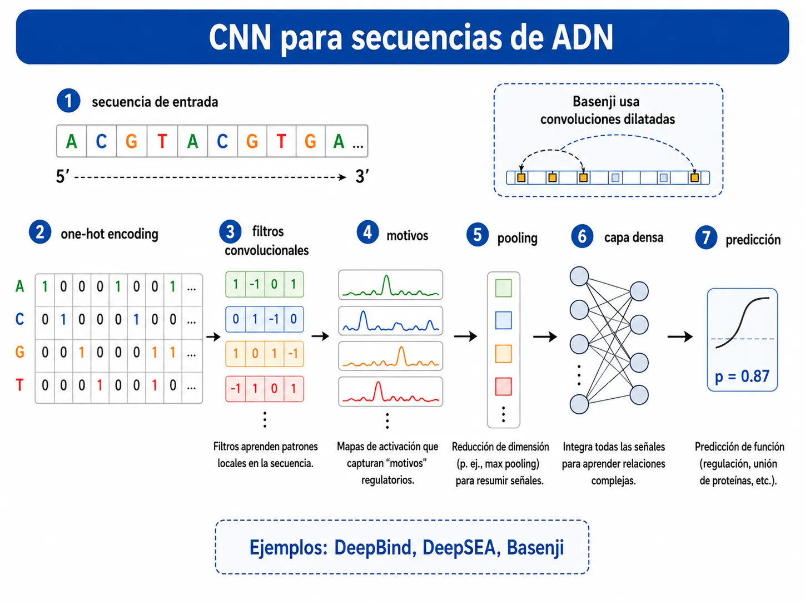
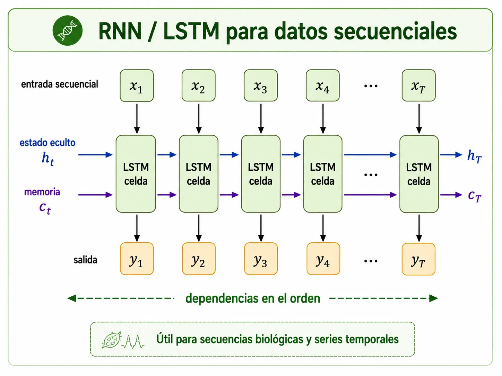
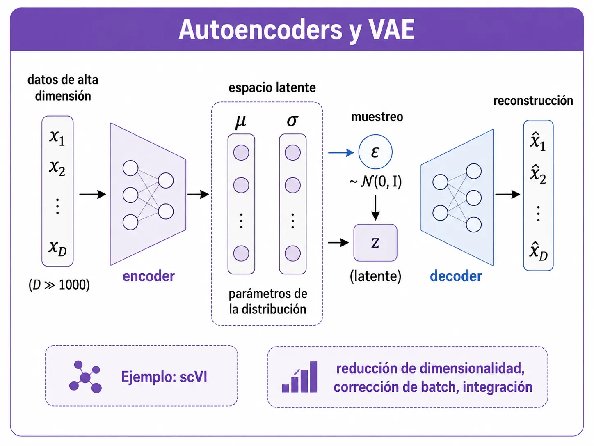
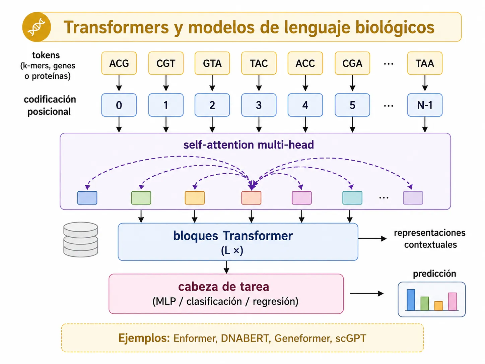
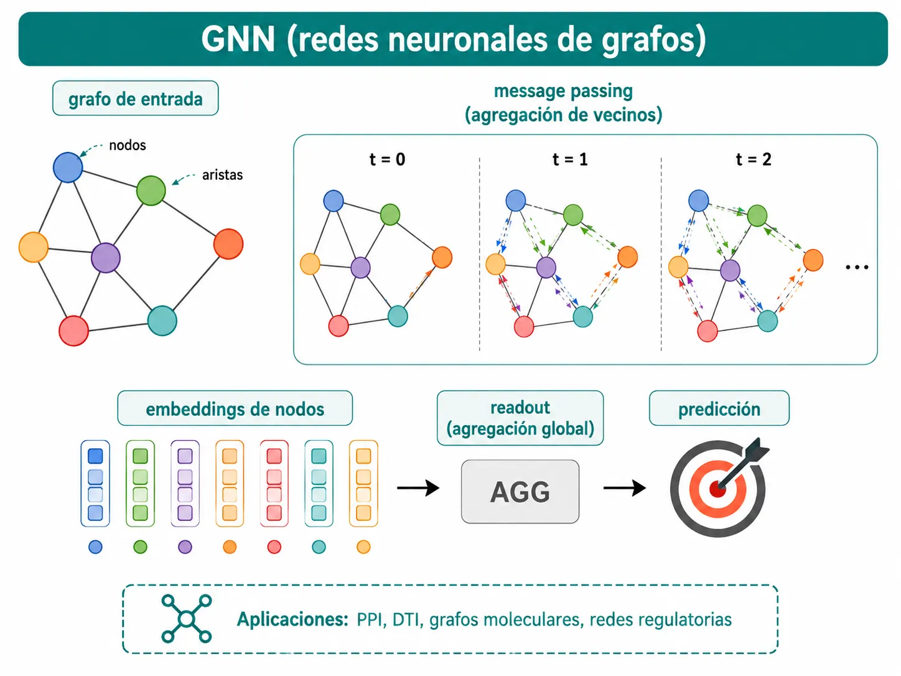
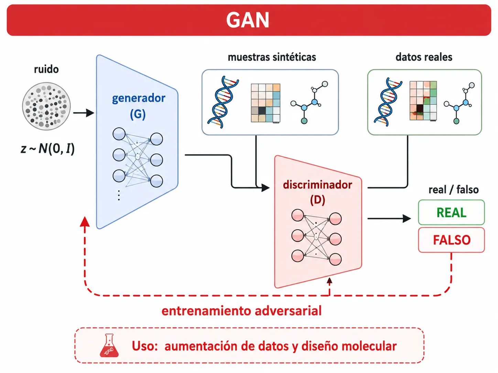

Este verano he aprovechado para aprender sobre el uso del deep learning en ciencias ómicas. No es un tema sencillo. Son modelos que pueden aportar mucho, pero que, de buenas a primeras, no tienen una implementación sencilla.
El deep learning es el método de moda “actual” y se ha convertido en la elección para muchas tareas ómicas porque los datos genómicos, transcriptómicos y proteómicos son de alta dimensionalidad (p >> n), no lineales y multimodales, condiciones en las que las redes neuronales profundas aprenden representaciones útiles que los métodos lineales no captan.
Las arquitecturas más conocidas son CNN para secuencias regulatorias (DeepBind, Basenji), autoencoders/VAE para single-cell e integración (scVI), transformers/modelos de lenguaje (Enformer, DNABERT, Geneformer, scGPT, ESMFold) y GNN para redes de interacción, y luego tenemos AlphaFold2, que revolucionó la proteómica estructural.
Principalmente se trabaja con Python: PyTorch, TensorFlow/Keras, scvi-tools/scanpy), pero también existe la opción de usar R vía keras/torch.
Profundicemos, pues, en este primer post-verano sobre este tema.
¿Qué es el deep learning y por qué encaja con las ómicas?
El deep learning es una rama del aprendizaje automático basada en redes neuronales artificiales con múltiples capas (también llamadas capas “profundas”). Su rasgo distintivo es el aprendizaje de representaciones: en lugar de que un experto defina qué características medir, la red aprende automáticamente jerarquías de características cada vez más abstractas a partir de los datos crudos, componiendo patrones simples en representaciones complejas capa a capa.
Los datos ómicos presentan cuatro propiedades que los hacen especialmente adecuados para el deep learning.
- Primero, alta dimensionalidad con p >> n: un experimento de RNA-seq mide decenas de miles de genes simultáneamente, a menudo con muchas más variables (genes) que muestras (pacientes).
- Segundo, no linealidad: las interacciones entre genes, proteínas y elementos regulatorios rara vez son aditivas.
- Tercero, datos multimodales: genómica, transcriptómica, epigenómica, proteómica y metabolómica ofrecen “vistas” complementarias del mismo sistema biológico.
- Cuarto, volumen creciente: el menor coste de la secuenciación ha generado conjuntos de datos masivos que las redes profundas pueden explotar.
Por estas razones, el deep learning se está convirtiendo en el método de elección para muchas tareas de modelado genómico, como la predicción del impacto de variantes genéticas en los mecanismos regulatorios, la accesibilidad del ADN y el splicing, y permite emplear arquitecturas adaptadas directamente de la visión por computadora y del procesamiento del lenguaje natural.
Tipos de modelos más usados en ómicas
En términos generales, los modelos no son nuevos, son los mismos que se emplean para otras funciones en áreas como logística, finanzas o en el propio ChatGPT. El matiz está en los datos, que aportan direccionalidad y foco. Haré un pequeño recorrido por cada una de ellas:
Redes neuronales convolucionales (CNN) para secuencias de ADN
Las CNN se diseñaron originalmente para la visión por computadora, es decir, para imitar con un algoritmo la visión humana de las imágenes. Detectan motivos de secuencia (análogos a los filtros de imagen) a lo largo de las secuencias de ADN. El pionero para este fin fue DeepBind, capaz de predecir las especificidades de unión de proteínas a ADN y ARN y de superar a los métodos previos, incluso entrenando con datos in vitro y evaluando in vivo. También tenemos DeepSEA, que predice los efectos de variantes no codificantes sobre la cromatina, y más tarde apareció Basenji, que extendió estas ideas a la predicción de la actividad regulatoria a lo largo de los cromosomas mediante convoluciones dilatadas para capturar un contexto genómico más amplio.

RNN/LSTM para datos secuenciales
Las redes neuronales recurrentes y las LSTM son otro tipo de redes neuronales que procesan secuencias manteniendo un “estado de memoria”, lo cual resulta útil para datos en los que el orden importa (secuencias biológicas y series temporales de expresión). En proteómica se usan, por ejemplo, para modelar propiedades dependientes de la secuencia peptídica como los tiempos de retención cromatográfica.

Autoencoders y VAE para la reducción de dimensionalidad y la integración
Los autoencoders variacionales (VAE) aprenden representaciones latentes compactas de datos de alta dimensionalidad. scVI es el ejemplo canónico: utiliza optimización estocástica y redes neuronales profundas para representar probabilísticamente la expresión génica en células individuales, corrigiendo los batch effects y modelando el ruido técnico. Se usa para la corrección de lote, la visualización, el clustering y la expresión diferencial, y constituye la base de la integración multiómica en single-cell.

Transformers y modelos de lenguaje biológicos
Los transformers, con su mecanismo de atención, capturan dependencias a largo alcance. Aquí tenemos Enformer de DeepMind, que se entrena a resolución de 128 pb sobre 200 kb de secuencia de entrada. También tenemos DNABERT, que adapta BERT al “lenguaje” del ADN no codificante, o Geneformer, un modelo de atención preentrenado sobre el corpus Genecorpus-30M, que contiene aproximadamente 29,9 millones (29.900.531) de transcriptomas humanos de célula única ensamblados en junio de 2021 (la versión V2 se amplió después a unos 104 millones) que permite hacer predicciones con datos limitados y ha identificado dianas terapéuticas candidatas para cardiomiopatía. Por no extenderme mucho en este punto, os dejo otros modelos similares: scGPT (Cui et al., Nat Methods 2024), un modelo fundacional preentrenado aplicable a la anotación de tipos celulares, la integración multilote y multiómica y la predicción de la respuesta a perturbaciones; el famoso AlphaFold2, que resolvió el problema del plegamiento de proteínas; y ESMFold, que utiliza un modelo de lenguaje de proteínas escalado para predecir la estructura a partir de una única secuencia.

Redes neuronales de grafos (GNN)
Las GNN operan sobre datos estructurados, como grafos (redes de interacción proteína-proteína, redes regulatorias, grafos moleculares atómicos…), y son especialmente populares en el descubrimiento de fármacos, la predicción de la interacción fármaco-diana (DTI), la predicción de la afinidad de unión proteína-ligando y la clasificación de subtipos de cáncer mediante la integración multiómica.

GAN
Las redes generativas antagónicas se han aplicado a la aumentación de datos ómicos y al diseño molecular (por ejemplo, en plataformas de descubrimiento de dianas), aunque su uso es más limitado que el de los VAE y los transformers.

Ejemplos de uso en Python y R
El lenguaje predilecto para trabajar con estos modelos es, de lejos, Python. Los dos frameworks de base son PyTorch y TensorFlow/Keras. Sobre ellos se construyen los ecosistemas especializados:
- scanpy, toolkit escalable para análisis de expresión de célula única que maneja más de un millón de células y usa la estructura AnnData.
- scvi-tools, librería de Python para análisis probabilístico de datos ómicos de célula única que implementa scVI y modelos relacionados.
- DeepChem para química y descubrimiento de fármacos.
- PyTorch Geometric para GNN.
- Hugging Face para acceder a modelos biológicos preentrenados (DNABERT, ESM, Geneformer, scGPT).
El flujo típico en single-cell combina scanpy para el preprocesamiento y scvi-tools para el modelado con redes neuronales.
No obstante, R sigue vivo, sobre todo en bioestadística y Bioconductor. Posit mantiene los paquetes keras/tensorflow para R desde 2017 (interfaz a Keras vía reticulate) y, desde 2020, torch para R, una implementación nativa construida sobre libtorch en C++ que no requiere Python. En 2024 se lanzó keras3 para R, con soporte para múltiples backends (TensorFlow, JAX, PyTorch). En el ecosistema Bioconductor/CRAN existen varios paquetes que envuelven redes neuronales para ómicas:
- DeepPINCS usa Keras/TensorFlow para predecir interacciones compuesto-proteína desde secuencias.
- scDHA implementa un autoencoder jerárquico para el análisis de scRNA-seq (clustering, reducción de dimensionalidad, clasificación y pseudotempo).
Con Python se desarrollan modelos; con R se realiza la validación estadística y se construyen pipelines con Bioconductor.
Limitaciones
Llegamos al punto clave: ¿cuán fácil es utilizar estos modelos? Respuesta rápida: poco.
- Las redes profundas son difíciles de interpretar. Se usan técnicas de IA explicable (importancia por atención, mapas de saliencia, valores SHAP), pero la interpretabilidad se aplica, a menudo, ad hoc. Algunos autores recomiendan emplear varios métodos de interpretabilidad y comparar sus resultados, en lugar de confiar en un solo método.
- El gran caballo de Troya: los datos. Se requieren grandes volúmenes de datos y un alto coste computacional. Modelos como Enformer, AlphaFold2 y los modelos fundacionales requieren recursos computacionales considerables (GPU/TPU) para entrenarse, lo que constituye una GRAN barrera de entrada.
- Otra limitación: cuando hay muchas más variables que muestras, los modelos pueden memorizar ruido en lugar de aprender una señal generalizable. Esto exige regularización y validación cruzada rigurosas y conjuntos de prueba independientes. Los datos genómicos, además, suelen estar muy desbalanceados (pocas variantes patogénicas frente a muchas benignas), lo que obliga a usar métricas como la precisión y el recall.
- Otra de las limitaciones es la presencia de efectos de lote (variaciones técnicas entre experimentos, plataformas o laboratorios), que pueden confundirse con señal biológica. Modelos como scVI incorporan corrección de lote, pero evaluar y mitigar estos efectos en estudios ómicos a gran escala sigue siendo un problema importante para la reproducibilidad.
- La genómica humana está fuertemente sesgada hacia la ascendencia europea. El 67% de los estudios de este tipo incluyen exclusivamente participantes de ascendencia europea, otro 19% solo de ascendencia asiática oriental y apenas el 3,8% corresponde a cohortes de poblaciones africanas, hispanas o indígenas. En consecuencia, los polygenic risk scores derivados de datos europeos rinden significativamente peor en muestras no europeas (por ejemplo, en muestras de ascendencia africana: t = −5,97; df = 24; p = 3,7 × 10⁻&sup6;). Esto amenaza directamente la equidad de las aplicaciones clínicas basadas en modelos entrenados con datos sesgados.
- También se peca de falta de validación clínica y externa y de generalización. Muchos modelos solo se validan internamente. La transferencia a nuevas poblaciones, tecnologías de secuenciación o tejidos suele degradar el rendimiento, lo que limita su uso clínico real y exige una validación externa prospectiva.
Mis recomendaciones
- Lo mejor para empezar en single-cell es adoptar el stack de Python scanpy + scvi-tools. Es el estándar de facto, bien documentado y con corrección de batch effects incorporada. Benchmark de referencia: comparar siempre con métodos lineales (PCA, Harmony) antes de asumir que la red profunda aporta valor.
- Para la genómica regulatoria y la predicción de variantes, quizá lo más eficiente sea usar modelos preentrenados (Enformer, DNABERT vía Hugging Face) mediante fine-tuning antes de entrenar desde cero, dado el coste computacional que probablemente no tengamos.
- Para otras áreas, como la proteómica estructural, usar AlphaFold2/ESMFold e interpretar siempre las puntuaciones de confianza por residuo (pLDDT). Mejor no tratar las predicciones de baja confianza como estructuras resueltas.
- Si el equipo trabaja con R (como me pasa generalmente a mí), tenemos las opciones de keras3/torch para modelos estándar, pero para modelos de vanguardia conviene interoperar con Python. Reserva R para el análisis estadístico, la visualización y los pipelines de Bioconductor. Más allá de eso, perderás horas de tu vida (créeme, ya pasé por eso).
Si vamos al ámbito clínico, antes de realizar cualquier afirmación, mi consejo es que valides externamente en otras cohortes, reportes la composición ancestral del conjunto de entrenamiento y apliques varios métodos de interpretabilidad. Si el rendimiento cae de forma sustancial (p. ej., la exactitud predictiva se reduce en más del 50%, como se ha documentado al aplicar scores europeos a poblaciones africanas) al validar en una población o tecnología distinta, ni te molestes en desplegar sin reentrenamiento y recalibración.